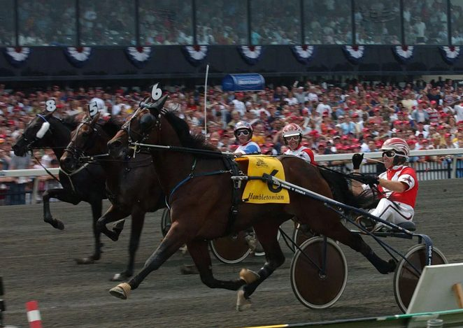
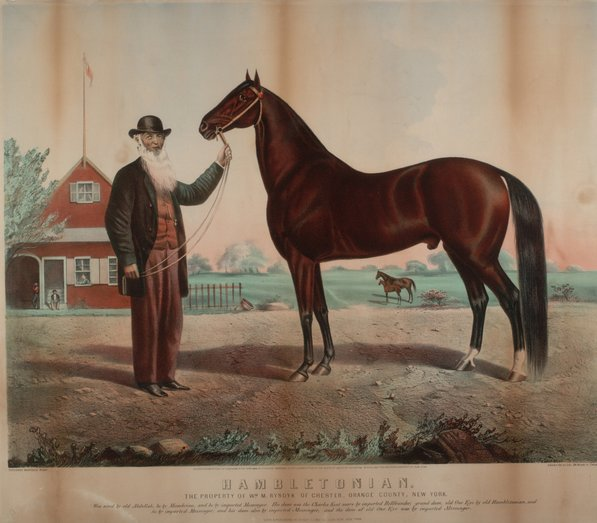
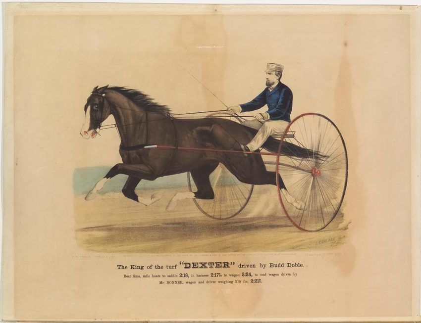
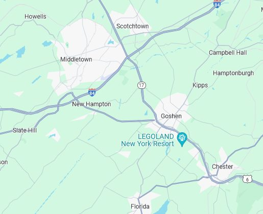
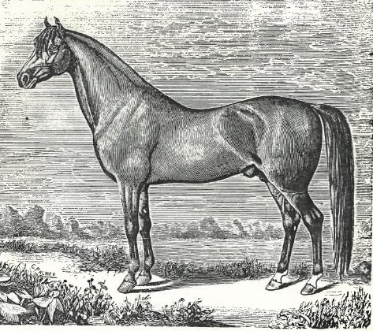
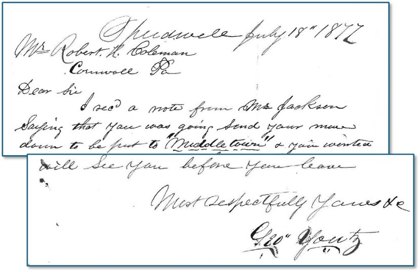
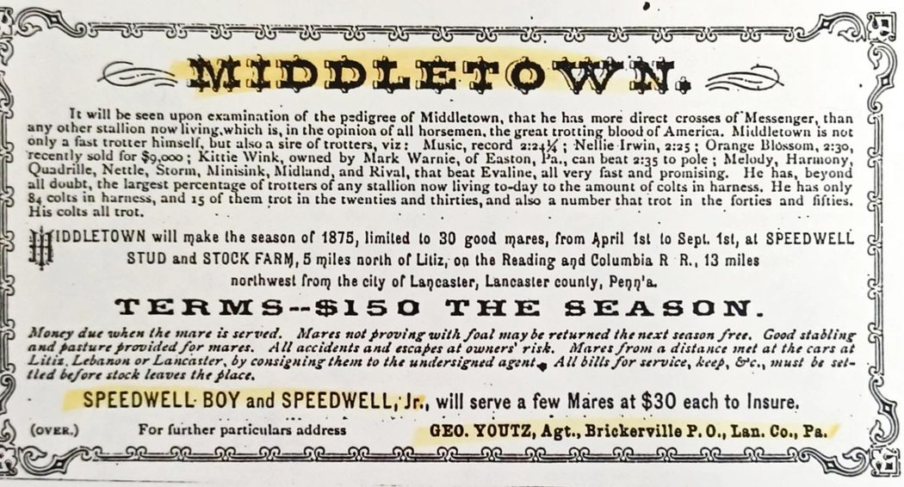
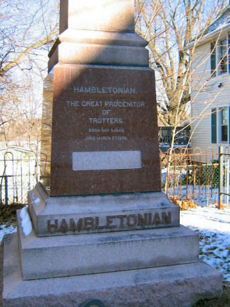
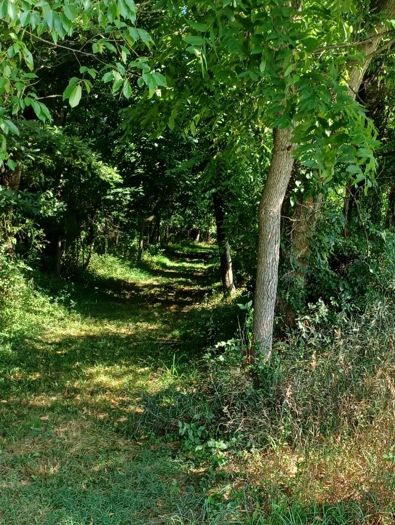

Horse racing, anyone? No, not here at our Lebanon county fair but 3 hours away at New Jersey's Meadowlands.
Saturday, August 3rd is the running of the historic Hambletonian Stakes, a harness racing event with a million-dollar purse. This its 99th year, the Stakes have run since 1926. The stakes are named for "Hambletonian 10," a famous horse from 1849. The National Museum of American History titles him the "Father of the American Trotter," whose blood-line runs into ninety per cent of the trotters and pacers of today. He is buried near the site of his birth, under a fifteen-foot monument of pink granite at Chester, Orange County, New York.

Hambletonian's was one of those true-life, underdog success stories that would make a great equestrian movie. His father Abdullah, a "mean and ugly" racehorse, had been bought for only $5 (cheap even in that day) and his mother, a lame Norfolk trotting mare from a good line. A farm hand named William Rysdyk bought Hambletonian for $125. The horse excelled in the mile run, beating a favorite by seven seconds and becoming a sensation. In his career he sired 1,331 foals, earning his owner over $200,000 before life's end in 1876. Forty of his offspring trotted the mile in less than 2½ minutes. Today's champions finish well under 2 minutes.

Bringing It Home
What lends interest to this horse story is that just before the Civil War, "Middletown 162" was born in 1860 of "Hambletonian." Named for nearby Middletown, New York, his first owner was Jefferson Fost of Florida, who paid an unusually low service fee of $35. "Middletown" was then sold to D. B. Irwin of Middletown before being sold to the Coleman family in 1875 and kept at Speedwell Stockfarms, in Brickerville.
Chester and Middletown lie about 10 miles east of Pennsylvania at the intersection of I-84 and Route 17.


By the time Robert H. Coleman was born in 1856, the Speedwell forge had ceased operating two years earlier and the family continued to use the farm property to breed standardbred horses (an American breed) for harness racing. Iron, trains and horses were in Robert's Coleman blood.
Young Robert and his sister Anne both had their pet horses while growing up in Cornwall. Anne wrote letters of her pleasurable rides between Cornwall and Colebrook. The farm hands kept Robert's favorite Mollie while he was away at school. Then in 1876 he arranged to have Mollie shipped to Hartford so he could enjoy riding.
In Cornwall and Lebanon, horse and carriage was the mode of local transportation; when not riding the train into Lebanon they went by carriage to church, and for commerce.
No surprise that when he inherited his trust, Robert became a horse fancier, inspired by the fine horses and stables at Speedwell. Around 1878-79 he built his grand stables on the Cornwall estate. The "Pinkerton" story told how Robert would send his stable manager off to places like Saratoga in search of fine horses to add to his stable. A half-mile racetrack still sits in the woods on the north side of Freeman Drive in Cornwall.
At the same time Robert's Freeman relatives built their fine stables and carriage house on the Freeman estate (now Cornwall Manor). Cousins Willie and Eddie would continue their love of horses and livestock well after Robert had left the area — see "Robert H. Coleman, Florida Man." Both Fairview Farms and what later became known as the Quentin Riding club grew out of that passion.
Two years after the R. W. Coleman Heirs had acquired "Middletown," 21-year-old Robert H. Coleman had sent word to George Youtz, manager of Speedwell, that he would be sending "Mollie" from Cornwall to be bred with "Middletown."

A year later, in November 1878 Coleman's attorney Artemas Wilhelm wrote "Our horse 'Middletown' is considered the finest horse in the U.S. I am very hopeful of the young horse stock at Speedwell. It was only financial embarrassment that compelled the former owner of 'Middletown' to part with him." Having bred Mollie successfully Robert was eager to have another mare bred; Wilhelm wrote, advising patience as the approaching winter months were not as conducive to foaling.
Speedwell Forge / Speedwell Stockfarms
Speedwell began as a forge, built on Hammer Creek c. 1760; later managed by James Old, father-in-law to young Robert's great grandfather Robert Coleman. Coleman bought the forge in 1784. Over the years he expanded the property (in addition to his properties at Elizabeth furnace as well as in Cornwall and Colebrook) and used the forge as a training ground for his sons who would later take over his iron business.
In addition to the mansion, its surrounding farmlands, woods, and meadows, Coleman added a "superbly built barn, side stables and a half-mile racetrack, which became the center of the Speedwell Stockfarms" (credit Herbert H. Beck, 1940).
After acquiring "Middletown," they soon added stallions "Shamrock" by Hambletonian, and "Middletown Chief" by Middletown, and "Millwood," and a fine stable of brood mares. In late 1879 an exhaustive Lancaster newspaper article described Speedwell, part of the 24,100 acre Coleman estate, as "one of the most complete Stock Farms in the country." One quarter of the lands were adapted for agricultural purposes, most of the remaining as "grazing commons and woodlands." Furthermore, "Middletown's" fame was known from Maine to California.
The article goes on to describe the ornate and well-equipped barn, 9 stables and room for 100 horses. Furthermore, an infirmary with box stalls, and a spring-fed water supply. All managed by George Yountz and a well-paid staff of eight stable hands and 17 farm hands. The barn was lost to fire many years ago.
The stock farm continued operation for over 40 years, finally managed by Robert H. Coleman's cousins William and Edward Freeman. The breeding of standard bred horses was discontinued at Speedwell in 1896 when the last sale was held.
An End for "Middletown"

"When Middletown died his memory was so highly prized by the Freemans that they had a surveyor get the exact center of their half-mile racing oval on which honored spot their beloved horse was buried" (Herbert H. Beck).
At the time Margaret Coleman Freeman Buckingham transferred the Cornwall Iron Furnace to the Commonwealth of Pennsylvania, she also sold Speedwell to Gerald and Kathryn Darlington in 1942. Their son Bill established the Wolf Sanctuary of Pennsylvania in 1980. His daughter Dawn continues to maintain the property and established the Speedwell Forge Bed & Breakfast.
Although "Hambletonian" is commemorated with a 15-foot high monument in Chester, New York, the remains of "Middletown," his famous son and local hero, lie in an old cornfield at Speedwell.

There is no marker of his grave, which seems uncharacteristic for the Colemans and Freemans given their "highly-prized" champion. Instead, the old oval became a cornfield, plowed for many decades, "Middletown" hidden somewhere out there in the "middle."
Presently the former oval track serves as a large grass field used for event parking. On its perimeter a section remains as a tree-lined path, the only reminder of former days.

More Speedwell history is found here. The Wolf Sanctuary of Pennsylvania and Speedwell Forge B&B are private and welcome reservations only. Please visit their websites for more information.
The author is grateful to the Cornwall Iron Furnace, its Feitig research collection, and also Dawn Darlington of Speedwell.
Originally published on LebTown, July 30, 2024.